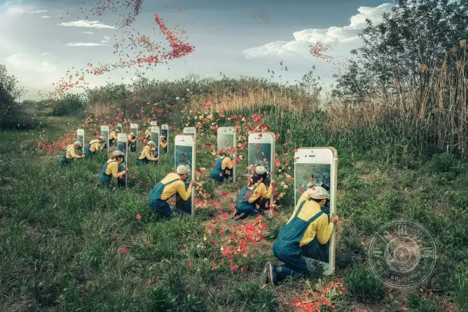
"What Are You Looking For?" (This work was selected for the "You and I" theme section of the 18th China International Photography Art Exhibition)
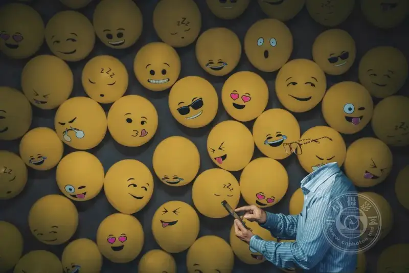
"Emoji" (This work was selected for the "You and I" theme section of the 18th China International Photography Art Exhibition)
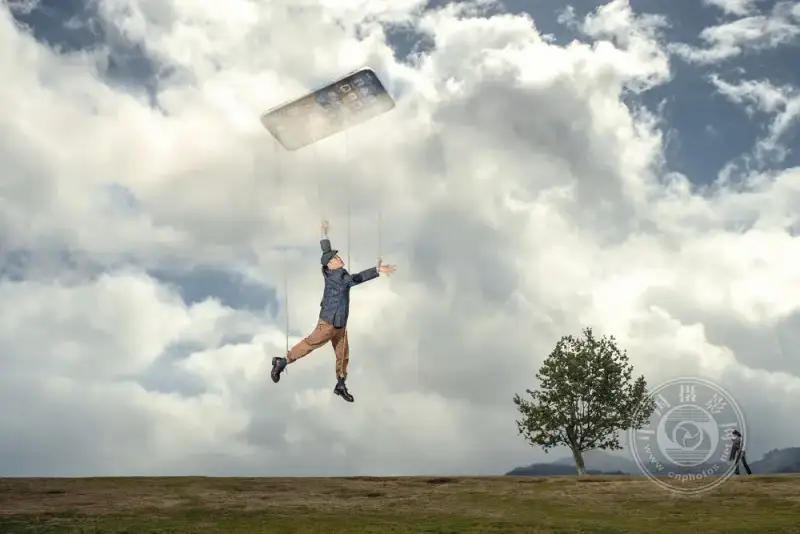
"The Puppet on Strings" (This work was selected for the "You and I" theme section of the 18th China International Photography Art Exhibition)
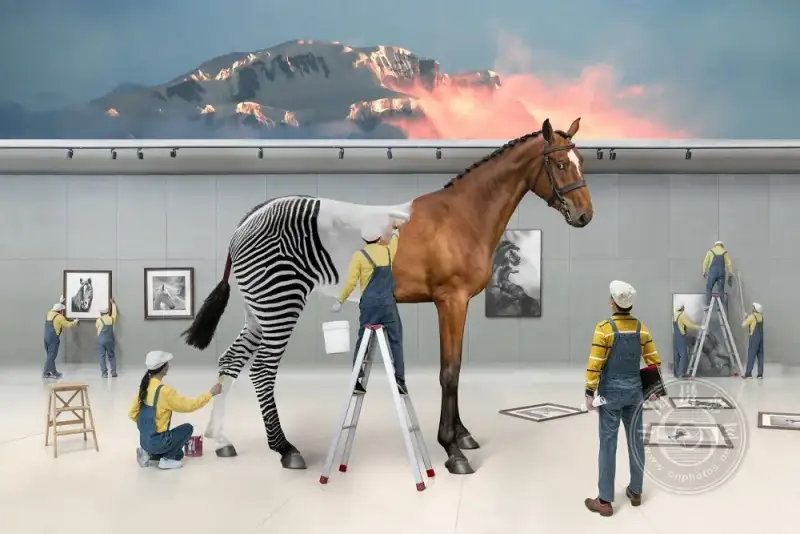
"Seeing Myself" Series (1): On Exhibitions and Art. "Imagined Space". That day, as I stood in the gallery, many illogical elements suddenly crowded into my mind. They overlapped in unreal ways and showed a surreal world, a dreamlike space of imagination.
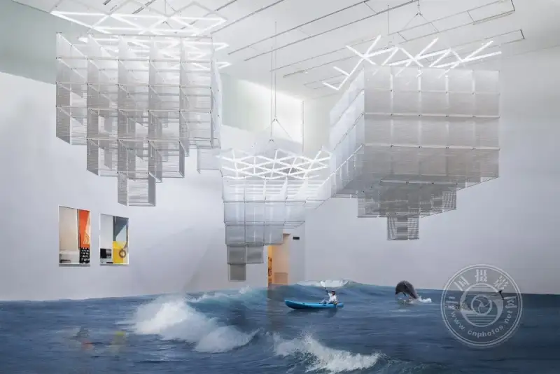
"Seeing Myself" Series 1: On Exhibitions and Art. "Art Trip". I love to travel. I found that many art journeys still wait for me to start them. There I will find a romance that crosses time and space.
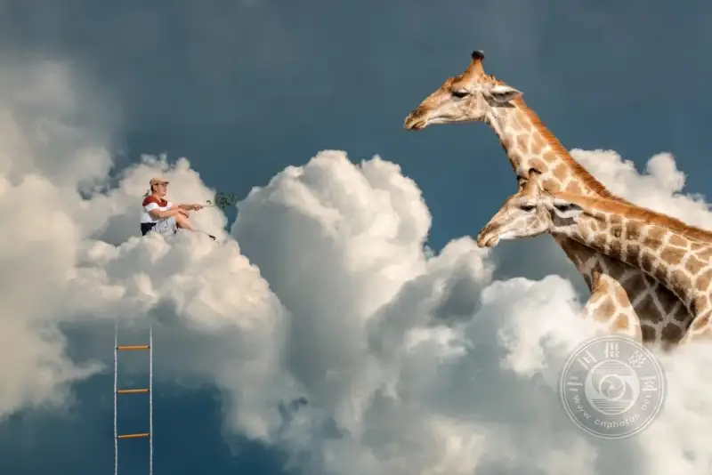
"Seeing Myself" Series (1): On Exhibitions and Art. "Cloud Viewing". The pandemic changed my daily habits and the way I work. New technology let me view exhibitions on the cloud. Online culture and entertainment became a popular new way of life.
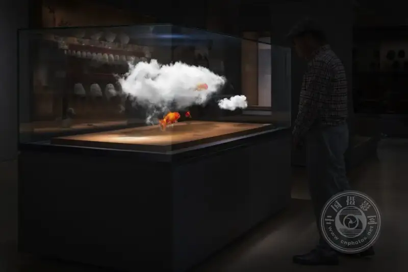
"Seeing Myself" Series (1): On Exhibitions and Art. "Museum Brainstorm". What happens when I stand in this unique art space? And in the end, what do I gain after I meet art?
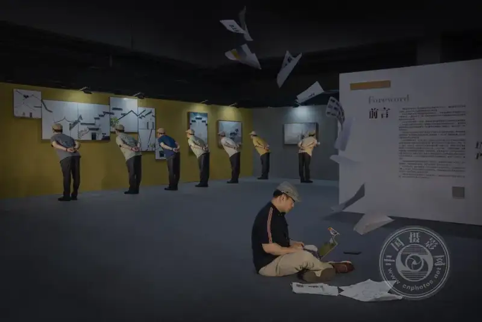
"Seeing Myself" Series (1): On Exhibitions and Art. "The Final Check Before the Opening".
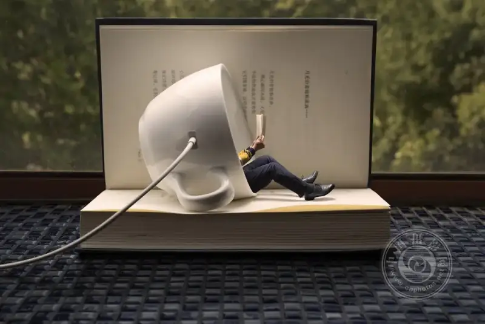
"Seeing Myself" Series (2): On Reading and Literature. "Recharge" (This work was selected for the Creative and Commercial category of the 28th National Photography Art Exhibition). I see myself as an introvert. I often choose a quiet space to recharge and feel safe.
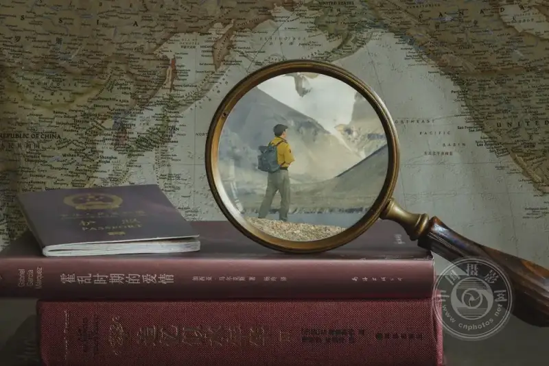
"Seeing Myself" Series (2): On Reading and Literature. "Remembrance". Novels have done a great deal for me. They keep widening my view and enriching my inner life. They let me travel to countless challenging places.
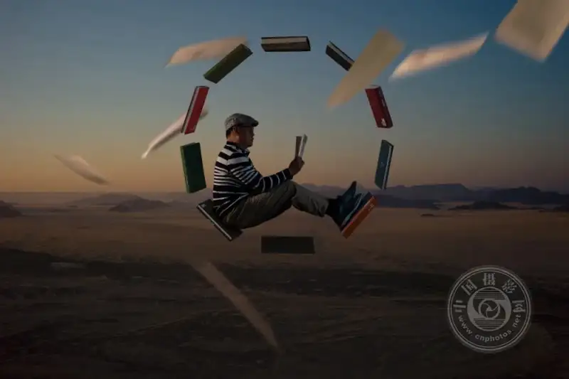
"Seeing Myself" Series (2): On Reading and Literature. "Space Capsule" (This work was selected for the Fine Art category of the 28th National Photography Art Exhibition). A writer creates a world when they write a novel. With only a few sentences on the page, I can fly through countless stories and times. I reach outer space or other magical worlds.
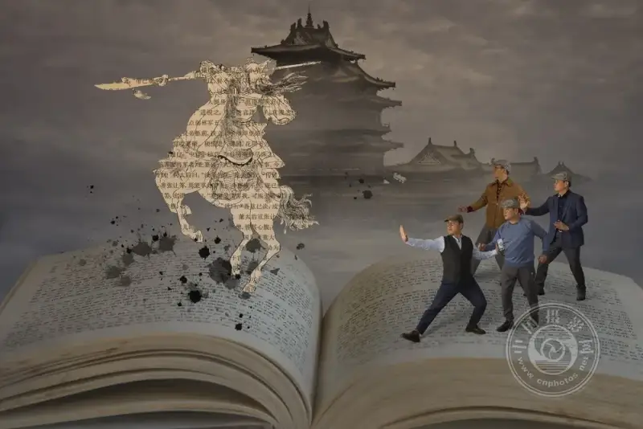
"Seeing Myself" Series (2): On Reading and Literature. "What Should a Person Be Like?". Literature has an enduring power and a long life. Reading helps me grow. It also keeps asking me a deep, hard ethical question: what should a person be like?
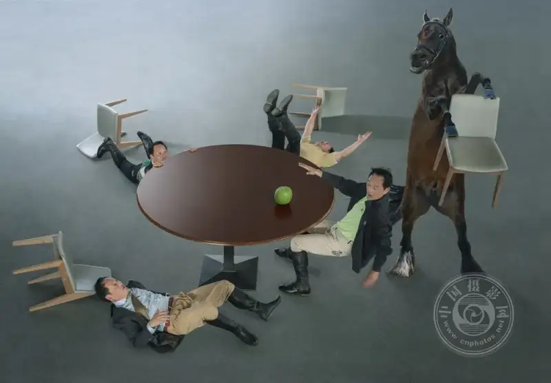
"Seeing Myself" Series (3): On Dreams, Memory, and the Mind. "The Dream Before I Fell From the Horse". A dream is a cinema inside me. It is a part of my emotions that I cannot separate.
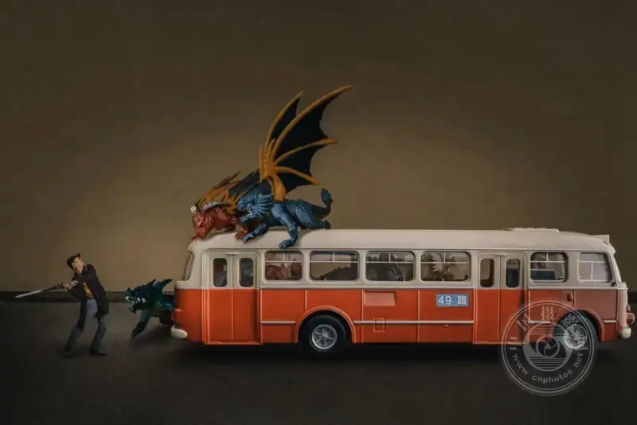
"Seeing Myself" Series (3): On Dreams, Memory, and the Mind. "The Dinosaur Dream". As a child I often dreamed of dinosaurs. I was afraid and always wanted to run. The dream always ended when the dinosaur's big mouth bit me. Then one day I thought I should take up a sword. I charged at the dinosaur with my sword, and then I woke up. After that, the dinosaurs did not come back.
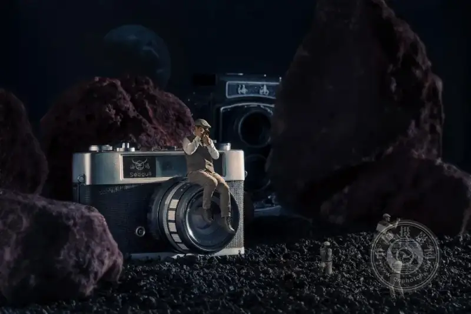
"Seeing Myself" Series (3): On Dreams, Memory, and the Mind. "My First Camera". When a little boy grew up, he always kept a Seagull 205 camera beside him. His father gave it to him when he got into college. The camera was old, but it held the history of the boy's growth.
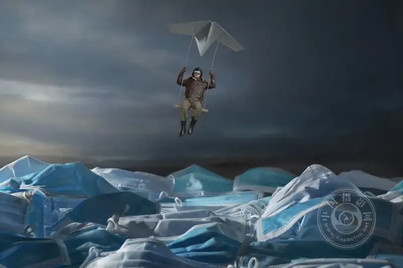
"Seeing Myself" Series (3): On Dreams, Memory, and the Mind. "Paper Plane" (This work was selected for the Fine Art category of the 28th National Photography Art Exhibition). Our lives are always changing. On the long path from birth to death, each person is an island. The question is whether we use tools or accept outside help to become a better self.
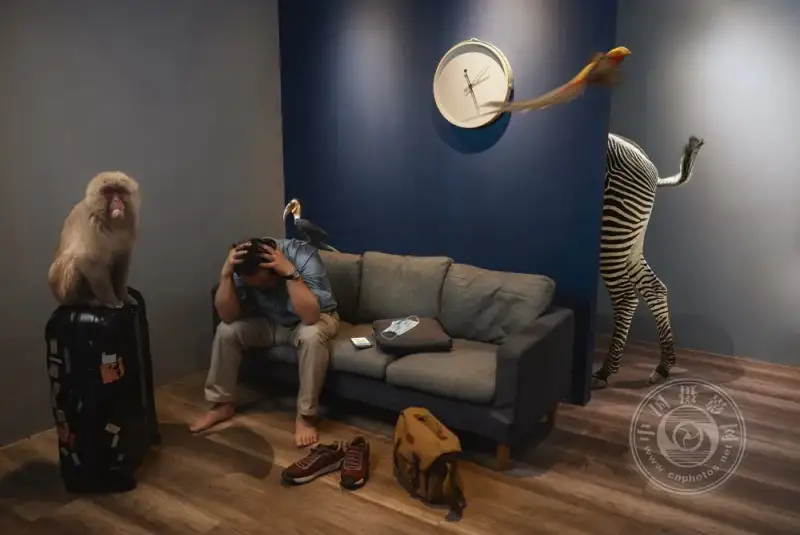
"Seeing Myself" Series (3): On Dreams, Memory, and the Mind. "Not Bound by Things, Not Haunted by the Heart". Isolation was a special measure during the pandemic. It was an experience I had never known. When I remember this pandemic later, even though I stayed indoors for a short time, my life will value things and people more. I will make this experience worthy of all the good in the world.
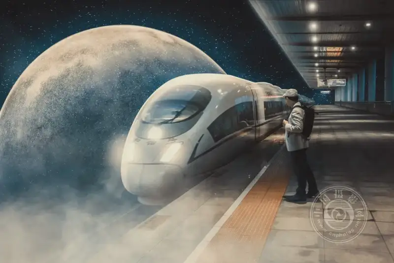
"Seeing Myself" Series (3): On Dreams, Memory, and the Mind. "The World Is So Big, I Want to Walk It Again".
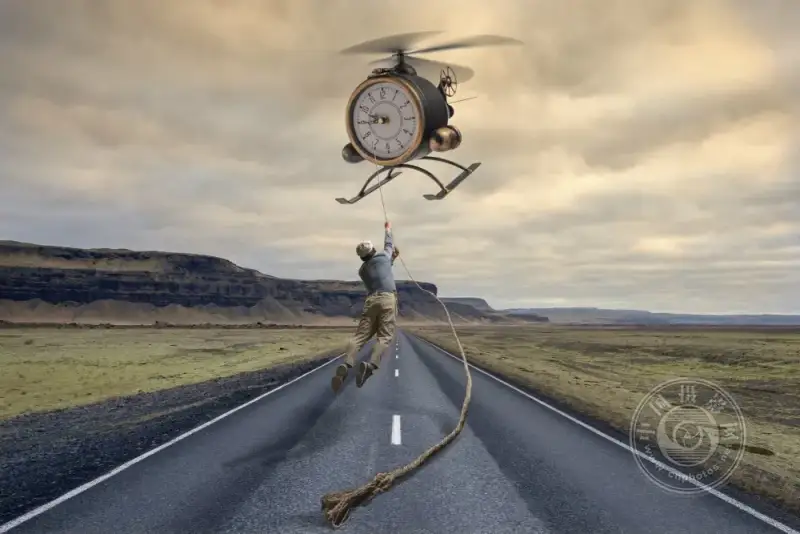
"Seeing Myself" Series (3): On Dreams, Memory, and the Mind. "Keeping Time" (This work was selected for the Fine Art category of the 28th National Photography Art Exhibition). As a child, time always moved too slowly. Every day I complained. Why did class not end yet? Why had the girl from the next class not passed my window? After I reached middle age, it was the opposite.
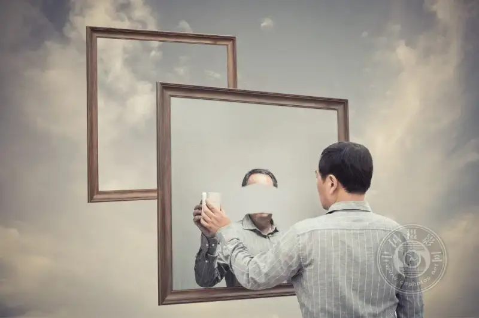
"Seeing Myself" Series (3): On Dreams, Memory, and the Mind. "Mirror Image". A mirror stays on the surface. The face it shows cannot express a person's true nature. It only gives an appearance. The true face seems lost in the mirror image, or lost in the gaze that watches the reflection.
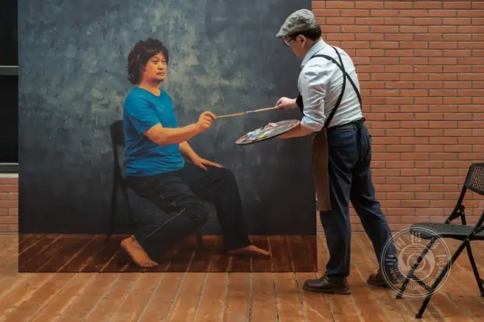
"Seeing Myself" Series (3): On Dreams, Memory, and the Mind. "Connection". A person has two layers of self. They can talk to themselves. They can treat themselves as an object to observe, understand, like, push, and judge.
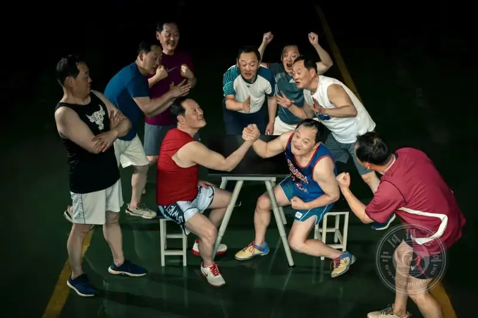
"Seeing Myself" Series (3): On Dreams, Memory, and the Mind. "Arm Wrestling". I focus on inner conflict because my personality is full of opposites. Life is not a finished product. It is a process of struggle, effort, failure, and effort again. The effort itself has its own value.
View large image
Expand all
21/272
"Digital Family"
"Scan a Code to Leave Home"
"The World Outside"
"What Are You Looking For?" (This work was selected for the "You and I" theme section of the 18th China International Photography Art Exhibition)
"Emoji" (This work was selected for the "You and I" theme section of the 18th China International Photography Art Exhibition)
"The Dinner Table"
"The Influencer"
"The Puppet on Strings" (This work was selected for the "You and I" theme section of the 18th China International Photography Art Exhibition)
"The Black Hole"
"Viewing Art in the Digital Age"
"Escape"
"Seeing Myself" Series (1): On Exhibitions and Art. "Imagined Space". That day, as I stood in the gallery, many illogical elements suddenly crowded into my mind. They overlapped in unreal ways and showed a surreal world, a dreamlike space of imagination.
"Seeing Myself" Series 1: On Exhibitions and Art. "Art Trip". I love to travel. I found that many art journeys still wait for me to start them. There I will find a romance that crosses time and space.
"Seeing Myself" Series (1): On Exhibitions and Art. "Cloud Viewing". The pandemic changed my daily habits and the way I work. New technology let me view exhibitions on the cloud. Online culture and entertainment became a popular new way of life.
"Seeing Myself" Series (1): On Exhibitions and Art. "Museum Brainstorm". What happens when I stand in this unique art space? And in the end, what do I gain after I meet art?
"Seeing Myself" Series (1): On Exhibitions and Art. "The Final Check Before the Opening".
"Seeing Myself" Series (2): On Reading and Literature. "Recharge" (This work was selected for the Creative and Commercial category of the 28th National Photography Art Exhibition). I see myself as an introvert. I often choose a quiet space to recharge and feel safe.
"Seeing Myself" Series (2): On Reading and Literature. "Remembrance". Novels have done a great deal for me. They keep widening my view and enriching my inner life. They let me travel to countless challenging places.
"Seeing Myself" Series (2): On Reading and Literature. "Space Capsule" (This work was selected for the Fine Art category of the 28th National Photography Art Exhibition). A writer creates a world when they write a novel. With only a few sentences on the page, I can fly through countless stories and times. I reach outer space or other magical worlds.
"Seeing Myself" Series (2): On Reading and Literature. "What Should a Person Be Like?". Literature has an enduring power and a long life. Reading helps me grow. It also keeps asking me a deep, hard ethical question: what should a person be like?
"Seeing Myself" Series (3): On Dreams, Memory, and the Mind. "The Dream Before I Fell From the Horse". A dream is a cinema inside me. It is a part of my emotions that I cannot separate.
"Seeing Myself" Series (3): On Dreams, Memory, and the Mind. "The Dinosaur Dream". As a child I often dreamed of dinosaurs. I was afraid and always wanted to run. The dream always ended when the dinosaur's big mouth bit me. Then one day I thought I should take up a sword. I charged at the dinosaur with my sword, and then I woke up. After that, the dinosaurs did not come back.
"Seeing Myself" Series (3): On Dreams, Memory, and the Mind. "My First Camera". When a little boy grew up, he always kept a Seagull 205 camera beside him. His father gave it to him when he got into college. The camera was old, but it held the history of the boy's growth.
"Seeing Myself" Series (3): On Dreams, Memory, and the Mind. "Paper Plane" (This work was selected for the Fine Art category of the 28th National Photography Art Exhibition). Our lives are always changing. On the long path from birth to death, each person is an island. The question is whether we use tools or accept outside help to become a better self.
"Seeing Myself" Series (3): On Dreams, Memory, and the Mind. "Not Bound by Things, Not Haunted by the Heart". Isolation was a special measure during the pandemic. It was an experience I had never known. When I remember this pandemic later, even though I stayed indoors for a short time, my life will value things and people more. I will make this experience worthy of all the good in the world.
"Seeing Myself" Series (3): On Dreams, Memory, and the Mind. "The World Is So Big, I Want to Walk It Again".
"Seeing Myself" Series (3): On Dreams, Memory, and the Mind. "Keeping Time" (This work was selected for the Fine Art category of the 28th National Photography Art Exhibition). As a child, time always moved too slowly. Every day I complained. Why did class not end yet? Why had the girl from the next class not passed my window? After I reached middle age, it was the opposite.
"Seeing Myself" Series (3): On Dreams, Memory, and the Mind. "Mirror Image". A mirror stays on the surface. The face it shows cannot express a person's true nature. It only gives an appearance. The true face seems lost in the mirror image, or lost in the gaze that watches the reflection.
"Seeing Myself" Series (3): On Dreams, Memory, and the Mind. "Connection". A person has two layers of self. They can talk to themselves. They can treat themselves as an object to observe, understand, like, push, and judge.
"Seeing Myself" Series (3): On Dreams, Memory, and the Mind. "Arm Wrestling". I focus on inner conflict because my personality is full of opposites. Life is not a finished product. It is a process of struggle, effort, failure, and effort again. The effort itself has its own value.
Name: Jiang Shu
Pen name: Qiuse Wutong
Gender: Male
Ethnic group: Han
Date of birth: 1967-11-30
Political status: Other
Education: University
Employer: Nanjing Xinsai Culture Communication Co., Ltd.
Position: General Manager
Professional title: Intermediate Engineer
Native place: Xuanwu District, Nanjing, Jiangsu
Photography career:
He is secretary-general of the New Arts Group Committee of the Jiangsu Photographers Association. He has worked as a curator many times. His shows include the China International Photography Art Exhibition, the Jiangsu Photography Art Exhibition, and the Yangtze River Delta Three Provinces and One City Photography Development Alliance exchange show.
Photographs:
Series of 11 images: "Phone Obsession"
As artificial intelligence grows, the world has turned upside down. Smartphones have slowly become a tool we cannot live without. They greatly expand the virtual space where we meet people, gain knowledge, and express ourselves. They bring more joy to life, but they also bring a deeper dependence. We are drawn to the screen in front of us, and we slowly become addicted. The phone has become another entrance to our lives. This entrance connects us to the world. In fact, it has become a part of our bodies. We are tied to it and cannot let go. This small thing that fits in our palm makes us trust it too much. Few people realize that this bondage to the phone can turn back on us in unexpected ways. Does it control us without our notice, or are we foolishly using its intelligence? Can we really put the phone aside in real life? I think that is almost impossible. As we face the new life the phone brings, a gap opens between our minds and our lives. So we are full of confusion. How should we respond?
Series of 19 images: "Seeing Myself"
A self-portrait of dreams, memory, imagination, emotion, and perception.